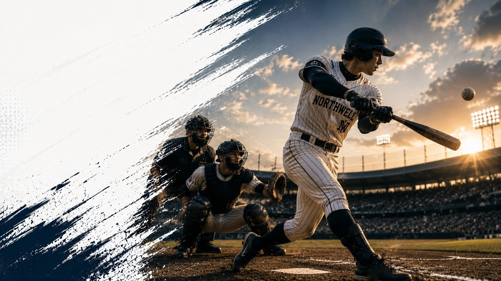

東京六大学・東都大学
大学野球の試合結果・日程・順位を毎日更新
全10リーグ・56チームの結果・順位を掲載 | 最終更新 2026-09-08
東京六大学野球連盟
2026年春季
東京六大学野球 2026年春季リーグ戦
チーム 6 消化 36/36試合
2026年秋季
東京六大学野球 2026年秋季リーグ戦
チーム 6 消化 0/30試合
東都大学野球連盟
2026年春季
東都大学野球1部 2026年春季リーグ戦
チーム 6 消化 40/40試合
東都大学野球2部 2026年春季リーグ戦
チーム 6 消化 36/36試合
東都大学野球3部 2026年春季リーグ戦
チーム 6 消化 34/40試合
東都大学野球4部 2026年春季リーグ戦
チーム 4 消化 29/30試合
2026年秋季
東都大学野球1部 2026年秋季リーグ戦
チーム 6 消化 4/33試合
東都大学野球2部 2026年秋季リーグ戦
チーム 6 消化 0/33試合
東都大学野球3部 2026年秋季リーグ戦
チーム 6 消化 0/36試合
東都大学野球4部 2026年秋季リーグ戦
チーム 4 消化 3/24試合
最新結果
| 日付 | リーグ | 時間 | 対戦 | スコア | 球場 |
|---|---|---|---|---|---|
| 9月8日（火） | 東都大学野球1部 2026年秋季リーグ戦 | 9:00 | 國學院大 vs 立正大 | 2 - 4 | 神宮球場 |
| 9月8日（火） | 東都大学野球1部 2026年秋季リーグ戦 | 11:30 | 青学大 vs 中央大 | 5 - 2 | 神宮球場 |
| 9月8日（火） | 東都大学野球1部 2026年秋季リーグ戦 | 14:00 | 亜細亜大 vs 東洋大 | 0 - 0 | 神宮球場 |
| 9月7日（月） | 東都大学野球1部 2026年秋季リーグ戦 | 11:30 | 青学大 vs 中央大 | 0 - 0 | 神宮球場 |
| 9月6日（日） | 東都大学野球4部 2026年秋季リーグ戦 | 9:00 | 科学大 vs 芝工大 | 2 - 9 | 芝浦工業大学グラウンド |
| 9月5日（土） | 東都大学野球4部 2026年秋季リーグ戦 | 9:00 | 芝工大 vs 科学大 | 10 - 0 | 芝浦工業大学グラウンド |
| 9月5日（土） | 東都大学野球4部 2026年秋季リーグ戦 | 11:30 | 一橋大 vs 都市大 | 6 - 0 | 芝浦工業大学グラウンド |
| 6月1日（月） | 東京六大学野球 2026年春季リーグ戦 | 13:00 | 早大 vs 慶大 | 0 - 3 | 明治神宮野球場 |
| 5月31日（日） | 東京六大学野球 2026年春季リーグ戦 | 13:00 | 慶大 vs 早大 | 4 - 5 | 明治神宮野球場 |
| 5月30日（土） | 東京六大学野球 2026年春季リーグ戦 | 13:00 | 早大 vs 慶大 | 1 - 8 | 明治神宮野球場 |
読みもの
観戦ガイド 2026-09-09
早慶戦とは？東京六大学野球の伝統カードの歴史と見どころ、チケットの取り方
東京六大学野球の名物カード「早慶戦」はなぜここまで盛り上がるのか。1903年の始まりから六大学リーグ結成までの歴史、当日の雰囲気、チケットの取り方まで、初めて観に行く方向けに整理して解説します。
キャリアガイド 2026-09-08
元野球部員の転職におすすめの業界・職種は？体育会経験が評価されやすい仕事の特徴
大学野球部を経て社会人になったOB・OGが転職を考えるとき、どんな業界・職種で野球部経験が評価されやすいのか。営業職・金融・公務員などの傾向と、業界選びの考え方を整理します。